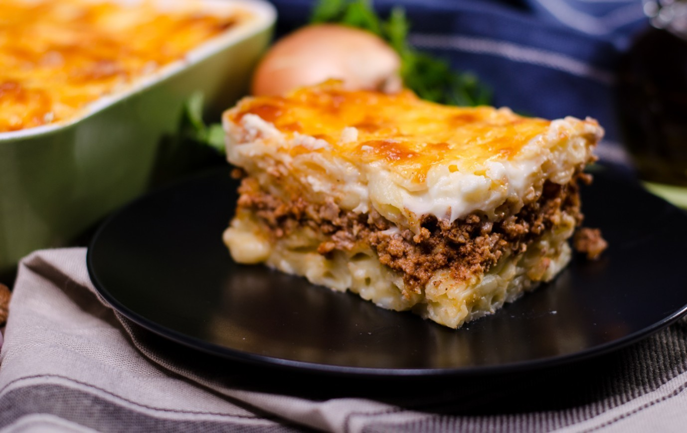

Pastitsio

Description
Pastitsio is a Greek pasta dish that's assembled and then baked, similar to the Italian lasagna.It usually consists of pasta, a meat sauce, and a bechamel sauce. Variations of pastitsio can be found thhroughout the Mediterranean region.
Ingredients
- Meat Sauce
- 2 tablespoons butter
- 1 large onion, chopped
- 3 cloves garliv,crushed
- 1 1/2 pounds lean ground beef
- 1 can crushed tomatoes
- 1/2 cup dry red wine
- 1/2 cup beef broth
- 2 tablespoons chopped fresh parsley
- 1/2 teaspoon ground cinnamon or 1 cinnamon stick
- 1 whole clove
- salt and pepper to taste
- Pasta
- 340 gramms bucatini or pastitsio pasta
- 4 tablespoons butter
- 1/4 cup grated Kefalotiri, Parmesan, or Pecorino cheese
- 1 dash ground nutmeg
- 1/4 teaspoon salt
- 1/4 teaspoon freshly ground black pepper
- 2 large eggs, lightly beaten
- Bechamel Sauce
- 1/2 cup butter
- 1/2 cup all-purpose flour
- 3 cups milk
- 1/4 teaspoon ground nutmeg
- 1/4 teaspoon salt
- 1/4 teaspoon ground black pepper
- 1 1/2 cups grated Kefalotiri, Parmesan, or Pecorino cheese, divided
- 1 large egg, lightly beaten
- 1 large egg yolk, lightly beaten
Home